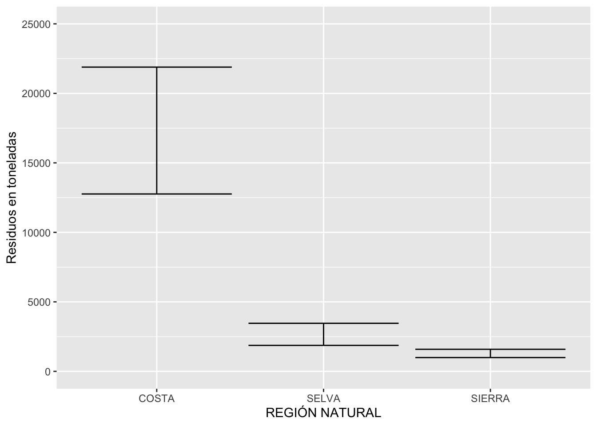
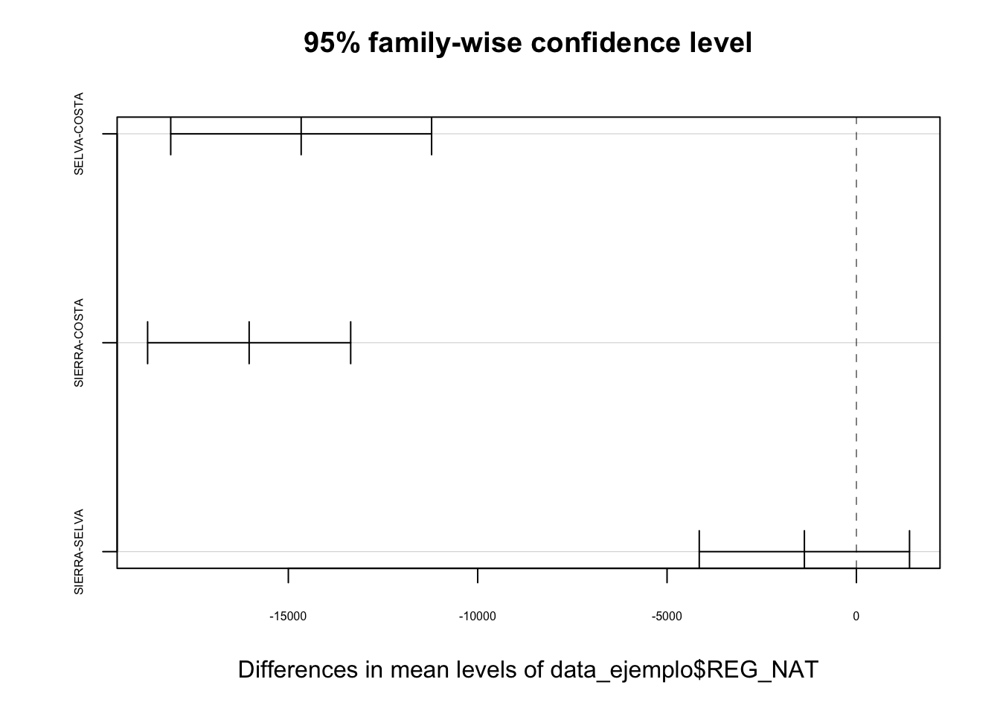

Práctica dirigida 6

FACULTAD DE CIENCIAS SOCIALES - PUCP
Curso: POL 278 - Estadística para el análisis político 1 | Semestre
2023 - 1
Test de ANOVA
Hasta el momento se ha visto una prueba, la prueba t para comparar medias de solo 2 grupos. En esta sección, veremos cómo expandir la comparación para varias medias usando otra prueba de inferencia. Es decir, se busca analizar la relación entre una variable dependiente cuantitativa (o numérica) y una variable independiente categórica (o de factor) con más de dos grupos.
En resumen: el test de ANOVA sirve para comparar la media de una variable dependiente numérica entre grupos de una variable de tipo factor con más de 2 grupos.
Esta prueba se basa en la distribución F y propone el siguiente par de hipótesis:
H0: No existe diferencia entre las medias poblacionales de los grupos evaluados / Hay igualdad entre las medias
HA: Al menos una media poblacional de un grupo es diferente / Hay diferencias entre al menos un grupo o más
Es decir, si se rechaza la H0, quizá todas las medias poblacionales entre grupos sean distintas, quizá algunas o quizá solo una difiere de las otras.
Esta prueba se basa en una comparación entre la variabilidad entre (between) y la variabilidad intra (within).
Se concluiría que al menos una de las medias grupales sería significativamente diferente de las otras medias grupales. El tema es que la prueba de ANOVA llega hasta ahí, pero no nos indica qué medias son diferentes. Para saber qué media(s) es(son) diferente(s) se tiene que hacer un test posterior: el test de Tukey.
Este test sirve para analizar qué diferencias entre grupos son significativas. Es decir, reporta todos los emparejamientos posibles entre grupos y en cada pareja corre una prueba t de diferencia de medias y la reporta.
Ojo: El test de ANOVA, al igual que la prueba t, tiene dos requisitos:
- La variable numérica se comporta de manera normal
- Existe homogeneidad de varianzas (homocedasticidad)
En el caso del primer requisito, si llegara a suceder que nuestra variable numérica no tuviera un comportamiento normal, nos apoyaremos en el Teorema Central del Límite, que plantea que, en la medida que nuestro marco muestral es suficientemente grande, la variable aleatoria se aproxima a un comportamiento normal.
En el caso del segundo requisito, por objetivos prácticos del ejercicio, asumiremos que existe homocedasticidad. Sin embargo, es importante saber que hay a disposición test estadísticos alternativos capaces de lidiar cuando no existe homogeneidad de varianzas, como es el caso de la prueba T3 de Dunnet/T2 de Tamhame. En la medida que asumimos que el segundo requisito se cumple, utilizaremos la prueba Tukey.
Ejemplo: Data sobre residuos municipales
La base de datos de generación de residuos sólidos municipales corresponde a la cantidad total de residuos sólidos generados anualmente en los domicilios y los provenientes de las actividades económicas e institucionales a nivel distrital. La unidad de medida es en toneladas.
Los residuos sólidos municipales son aquellos provenientes del consumo o uso de un bien o servicio, que comprenden específicamente como fuente de generación a las viviendas, los establecimientos comerciales, restaurantes, hoteles, mercados, instituciones públicas y privadas, instituciones educativas y del servicio de barrido y limpieza de espacios públicos.
Se puede encontrar la base de datos en la Plataforma Nacional de Datos Abiertos:
Veamos ahora si los promedios de toneladas de residuos sólidos municipales difieren en más de dos grupos: Costa,Sierra y Selva, para el año 2021:
library(rio)
data = import("3. bd residuos municipales.csv")Primero, filtremos la base de datos para quedarnos con periodo 2021
library(dplyr)
str(data$PERIODO)## int [1:14978] 2014 2014 2014 2014 2014 2014 2014 2014 2014 2014 ...table(data$PERIODO)##
## 2014 2015 2016 2017 2018 2019 2020 2021
## 1851 1867 1874 1874 1874 1874 1874 1890data = data %>% filter(PERIODO == 2021)Ahora, seleccionemos las variables con las que trabajaremos
str(data$REG_NAT)## chr [1:1890] "SELVA" "SELVA" "SIERRA" "SIERRA" "SIERRA" "SIERRA" "SELVA" ...table(data$REG_NAT)##
## COSTA SELVA SIERRA
## 334 306 1250# Debido a la estructura de la variable, vamos a convertirla en categórica
data$REG_NAT = as.factor(data$REG_NAT)
str(data$REG_NAT)## Factor w/ 3 levels "COSTA","SELVA",..: 2 2 3 3 3 3 2 3 2 2 ...table(data$REG_NAT)##
## COSTA SELVA SIERRA
## 334 306 1250data_ejemplo = data %>% select(REG_NAT,toneladas_residuos=QRESIDUOS_MUN)Observando diferencias de promedio entre las toneladas de residuos para más de 2 grupos
Hagamos una observación visual informal:
H0: No hay diferencia de promedio en las toneladas de residuos generados por región natural: Costa, Sierra y Selva.
library(lsr)
data_grafico= data_ejemplo %>%
group_by(REG_NAT)%>%
summarise(Desviacion = sd(toneladas_residuos, na.rm=T),
Media = mean(toneladas_residuos, na.rm=T),
min = ciMean(toneladas_residuos,conf = 0.95, na.rm=T)[1],
max = ciMean(toneladas_residuos,conf = 0.95, na.rm=T)[2],
n=length(toneladas_residuos))
data_grafico## # A tibble: 3 × 6
## REG_NAT Desviacion Media min max n
## <fct> <dbl> <dbl> <dbl> <dbl> <int>
## 1 COSTA 42398. 17325. 12761. 21888. 334
## 2 SELVA 7061. 2664. 1869. 3458. 306
## 3 SIERRA 5368. 1290. 992. 1588. 1250library(ggplot2)
ggplot(data_grafico,aes(x=REG_NAT,y=Media))+geom_errorbar(aes(ymin=min,ymax=max))+xlab("REGIÓN NATURAL")+ylab("Residuos en toneladas")+ylim(0,25000)
Ahora, confirmemos la observación visual con la prueba ANOVA. Obsevamos que el p-value es bastante pequeño y menor a 0.05, por lo que podemos afirmar que existe diferencia de promedios de toneladas de residuos según municipio por región natural: Costa, Sierra y Selva. Esto coincide con lo reportado por el gráfico.
anova <- aov(data_ejemplo$toneladas_residuos~data_ejemplo$REG_NAT)
summary(anova)## Df Sum Sq Mean Sq F value Pr(>F)
## data_ejemplo$REG_NAT 2 6.880e+10 3.440e+10 99.9 <2e-16 ***
## Residuals 1887 6.498e+11 3.444e+08
## ---
## Signif. codes: 0 '***' 0.001 '**' 0.01 '*' 0.05 '.' 0.1 ' ' 1Sin embargo, esto no nos dice cuáles son los grupos cuyos promedios difieren estadísticamente; es decir, cuyos intervalos de confianza no se traslapan. Para conocerlo, apliquemos la prueba Tukey:
TukeyHSD(anova)## Tukey multiple comparisons of means
## 95% family-wise confidence level
##
## Fit: aov(formula = data_ejemplo$toneladas_residuos ~ data_ejemplo$REG_NAT)
##
## $`data_ejemplo$REG_NAT`
## diff lwr upr p adj
## SELVA-COSTA -14661.248 -18105.581 -11216.916 0.0000000
## SIERRA-COSTA -16034.762 -18715.772 -13353.753 0.0000000
## SIERRA-SELVA -1373.514 -4149.633 1402.605 0.4770548Tenemos que observa la columna denominada p adj. Hay que ver aquellos grupos en los que la diferencia de promedios es menor a 0.05. En este caso, la prueba Tukey nos indica que hay diferencia entre la media de generación de toneladas de residuos entre las regiones Selva y Costa y las regiones Sierra y Costa; en ese sentido, podemos afirmar que la única media distinta es la de la Costa.
Podemos visualizar, además, las diferencias de otra forma. Aquellos emparejamientos cuyas líneas no crucen la línea vertical del cero, se puede decir que hay diferencias estadísticamente significativas.
plot(TukeyHSD(anova),cex.axis=0.5)